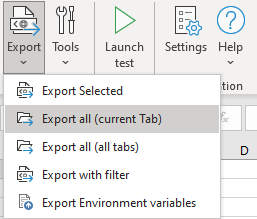

Export Test data
WebEngine Add-in allows you to export test data and environment variables to XML format, then it can be consumed by test automation solution.

![IMPORTANT] Test automation solutions build with WebEngine Framework does not handle excel file directly. The test data must be exported as XML format. When a test is launched via Excel, the Add-in exports the test data into a temporary directory in XML and consumes it during test execution.
In the group of "Export" buttons, you can:
- Export Selected: Export selected tests to an XML formatted TestSuite Data file.
- Export All (current tab): This buttons exports all test cases of current data sheet. By default, the xml file has the same name as the current sheet.
- Export All (all tabs): This button export all test cases of every data sheet.
- Export with filter: This function export test cases with a simple filter.
For example, you want to execute tests where name contains "E2E", you can use E2E as filter

- Export environment variables: This function exports environment variables (test data related to test environment) from sheet named "ENV". and generates ENV.xml.